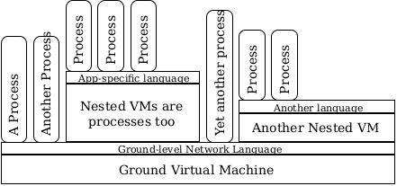
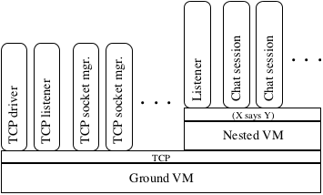
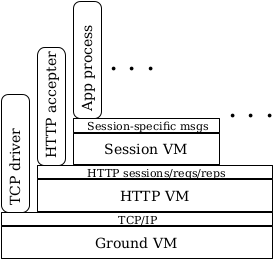

1 Concepts
Marketplace integrates ideas from both distributed systems and virtualized operating system designs to obtain an architecture of nested virtual machines (VMs). Each nested layer is equipped with its own publish/subscribe network that also propagates presence information about the (dis)appearance of services.
Throughout this manual, diagrams such as the following will illustrate various process structures:

Rectangular boxes represent VMs. The processes running within each VM are placed atop its box. The narrow rectangular strip at the top of each VM’s box represents the network connecting all the VM’s processes to each other; it will frequently contain a short description of the protocols used for communication across the represented network.
A central feature of Marketplace is that VMs are nothing more than regular processes, making them recursively nestable. Each VM supports a collection of processes all its own, and its internal IPC medium carries a VM-specific protocol that is often different from the protocol spoken by its containing VM.
The outermost VM is called the ground VM. The protocol spoken by processes running within the ground VM is a simple protocol relating Racket’s synchronizable events to Marketplace network messages. See Drivers for information on using Racket events from Marketplace programs.
1.1 What is a process, what are event handlers?
A Marketplace process is a collection of event handlers, plus a piece of private process state. Every processThe exception to this rule is the Ground VM, which plays a special role. runs within a containing VM.
When an event occurs that is relevant to a process, one of its event handlers is called with the process’s current state and a description of the event. The handler is expected to return an updated state value and a collection of actions for the containing VM to perform. An event handler, then, has the following approximate type:
State × Event → State × (Listof Action)
Event handlers are registered with the VM by creating endpoints using the endpoint macro (described in Creating endpoints) or the low-level add-endpoint structure (described in Endpoints and Messages).
Events, passed to event handlers, describe the results of actions from the outside world, neighbouring processes in the VM, or the VM itself. They are implemented as structs. See Endpoint Events for a description of the available event structures.
Actions, passed back to the VM by event handlers, describe actions the process wishes to perform. See Actions for the possible actions a process can take.
Note that the result of an event handler function is actually a Transition structure; the actual Typed Racket type of event handlers is TrapK, defined in Handler Functions.
1.2 What is a VM?
Virtual Machines (VMs) are simply a collection of processes, plus a shared medium of communication that the contained processes use to communicate with each other. VMs offer access to both their own internal network as well as to the external network owned by the VM’s own containing VM.Again, the only exception here is the Ground VM, which interfaces to the underlying Racket system and so has no containing VM.
1.3 Endpoints: Subscription and Advertisement
The Marketplace operating system’s inter-process communication facility is structured around publish/subscribe (pub/sub) messaging.For a survey of pub/sub messaging, see "The Many Faces of Publish/Subscribe", ACM Computing Surveys, Vol. 35, No. 2, June 2003, pp. 114–131. There’s also plenty out there on the Internet; a good starting point is to google for pub/sub message-oriented middleware.
Endpoints are the representation of a process’s engagement in some protocol. They pair a description of the process’s role in a conversation with an event handler that responds to events relating to that role.
A role describes the role some process is playing in a conversation. Concretely, roles are represented by Role structures. A role can be used by the currently-running process to describe some role it wishes to play, or can be carried in some EndpointEvent to describe the role some peer process is playing in a conversation.
Roles have three parts:
An orientation (type Orientation) describes whether this role is concerned primarily with producing or consuming messages.
A topic is a pattern over messages. Topics perform double duty: they both scope conversations and filter incoming messages. More on topics below.
An interest-type (type InterestType) determines whether the endpoint playing the given role is genuinely a participant in matching conversations or is simply observing the real participants. See Creating endpoints for more on interest-types.
1.4 Messages and Topics
Messages are simply Racket data structures. They can be any value for which equal? is defined, any #:prefab structure, most #:transparent structures, or any non-object structure for which prop:struct-map can be defined.
As mentioned above, topics are simply patterns over messages. They are represented as normal data structures with embedded wildcards. Use ? or (wild) to construct a wildcard. For example, given the following definition,
(struct chat-message (speaker text) #:transparent)
we can not only create instances that might be used with send-message,
(chat-message "Tony" "Hello World!")
but also create topic patterns using ?. For example, this pattern matches anything said by "Tony":
(chat-message "Tony" ?)
This pattern matches chat-messages sent by anyone saying "Hello":
(chat-message ? "Hello")
And finally, this pattern matches any chat-message at all:
Patterns can be nested. For instance, given the above definition of chat-message, the following pattern matches any chat message greeting anybody at all:
(struct greeting (target) #:transparent) (chat-message ? (greeting ?))
1.5 Presence
Presence (respectively its opposite, absence) is an indication that a matching conversational partner exists (resp. no longer exists) in the network. Presence can be used to synchronize conversations, setting up a conversational context before messages are sent.
The term "presence" itself is lifted from Instant Messaging protocols like XMPP, where it describes the online/offline status of one’s chat buddies. Here, it describes the online/offline status of peer processes, in terms of which conversations they are willing to engage in.
The system derives presence information from the set of active pub/sub subscription and advertisement endpoints a process has created. Creating a new endpoint with a topic pattern that matches some other process’s endpoint and an orientation opposite to the other process’s endpoint causes presence-events to be sent to both endpoints, informing them of the presence of the other. When a process crashes, or an endpoint is withdrawn with delete-endpoint, a corresponding absence-event is sent to the remaining endpoint.
1.6 Nesting, relaying, and levels of discourse
Because VMs can be nested, and each VM has an IPC network of its own for the use of its processes, information sometimes needs to be relayed from a VM’s external network to its internal network and vice versa.
In general, the protocol messages sent across a VM’s internal network may be quite different in syntax and meaning from those sent across the same VM’s external network: consider the case of the TCP chat server, which employs a nested VM to separate out TCP-related messages from higher-level, application-specific chat messages:

Each VM’s network corresponds to a distinct level of discourse. The nesting of VMs is then roughly analogous to the layering of network protocol stacks. For example (and purely hypothetically!) the TCP-IP/HTTP/Webapp stack could perhaps be represented as
